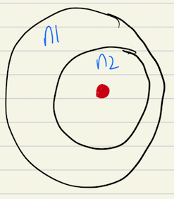
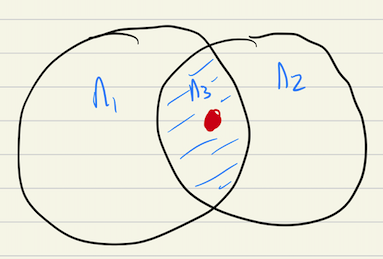
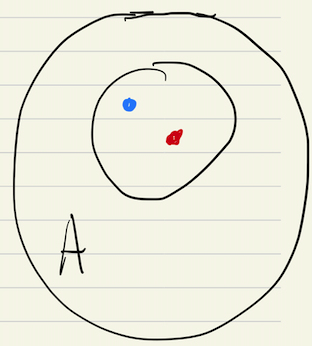

Introduction
In this note, we show how physicists construct more general coordinate systems that go beyond the standard Euclidean system.
Topology
- A topological space is a set with elements of points and mathematical rules (called a topology) that tell us how to define neighborhoods around these elements.
-
neighborhood’s can be known from these axioms1
- every element belongs to all of its neighborhoods
- if a subset of points include a neighborhood of a specific point, that subset is a neighborhood of that specific point

- the intersection of two neighborhoods of a point is a neighborhood of that point

- a neighborhood A of a point contains a subset that is also a neighborhood of that point, and A is a neighborhood of every point in the subset

-
One of the simpler topologies that we need to consider in physics is Euclidean2 where the neighborhoods are called open balls defined by the Euclidean metric (think Pythagorean theorem):
$$ B_r(p) = { x \in \R^n: d(p, x) < r }$$
In other words, all points surrounding the point such that those points are less than a distance r from that point
Coordinates on a Manifold
- A manifold is a topological space that “looks” Euclidean in a small neighborhood of any given point. How we define “small” depends on the nature of that space, but think of the Earth, which is an oblate spheroid, but appears to be a flat two dimensional (more or less) space to anybody floating on the ocean or walking on flatland. Manifolds are useful in physics because it abstracts our discussion of spaces away from the Euclidean realm typical of Newtonian physics. Relativity requires the concept of manifolds for example.
We can abstract our typical Newtonian coordinate systems to a definition that also works for manifolds.
Let’s start most simply with a coordinate system. An abstract coordinate system for a system with $n$ dimensions on an n-manifold M (an n-dimensional manifoled) can be written:
$$ \vec{x^i}, i \in \N_{> 0}, i \leq n $$
We wish to create a “local basis” around a point via tangent vectors:
$$ \vec{e_i} = \frac{\partial}{\partial x^i} \equiv \partial_i, i \in \N_{> 0}, i \leq n $$
Unlike the previous definition of $x^i$ which was descriptive, this definition is prescriptive, that is, it is how to create the local basis at each point. To get the actual local basis, you need to calculate the tangents at each point. This also allows you to define a metric tensor3 on the manifold as the dot product between the local basis vectors:
$$ g^{ij} = \vec{e}_i \cdot \vec{e}_j $$
The inverse of this metric tensor can then be used to define the daul basis4 $g^{ij} = (g^{-1})_{ij}$:
$$ \vec{e^i} = \vec{e_j} g^{ij}, i \in \N_{> 0}, i \leq n $$
What do we need a dual basis for? In Euclidean space, to get the component of a function along a specific basis direction, say $\vec{e_i}$, all we need is $\vec{f(x)}\cdot \vec{e_i}$. But in more complicated spaces, we can have a scenario where $\vec{e_i \cdot e_j} \neq 0, \forall i \neq j$. With a dual basis and a local basis, we have the orthogonality we may need to extract components along specific dimensions.
-
A metric tensor on a manifold is a way of defining distance and angles in a local area around each point on a manifold. ↩︎